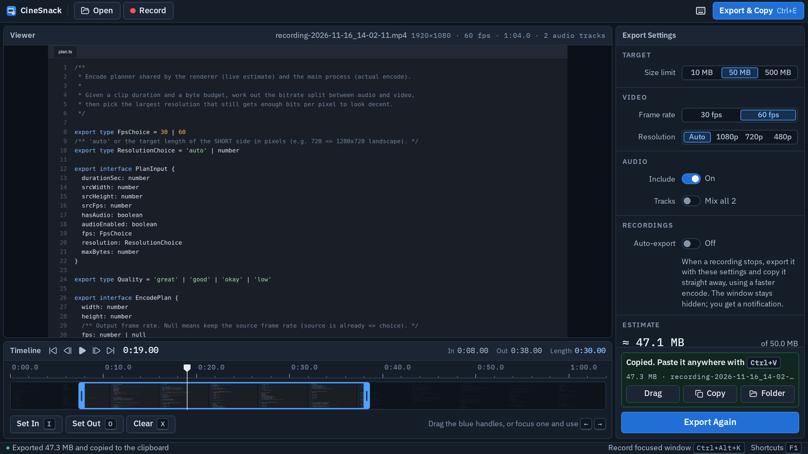
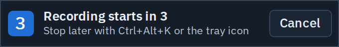

Your clip is 212 MB. The upload box takes 50.
CineSnack trims the video, works out the bitrate and resolution that fit your upload limit, encodes it with the audio intact, and leaves the file on your clipboard. Paste it into a chat, an email or a post with Ctrl+V.

Open, trim, export. The file is already copied.
- Open or record a videoDrop a file on the window, press Ctrl+O, or record your screen. MP4, MKV, MOV, WebM, AVI and anything else ffmpeg reads.
- Set the in and out pointsDrag the handles on the timeline, or press I and O at the playhead. Arrow keys step one frame.
- Pick the limit10 MB, 50 MB or 500 MB. The estimate updates as you trim and tells you the resolution, bitrate and quality you'll get.
- ExportCtrl+E runs a two-pass encode, measures the file, re-encodes smaller if it's over, and copies the MP4 to your clipboard.

What a 1080p60 clip becomes at 50 MB
The budget is 95% of the limit. Audio takes 128 kbps, video gets the rest, and the resolution is the biggest size that still gets 0.07 bits per pixel per frame. Short clips stop at about 12 Mbps instead of filling the limit, so they play without buffering. These rows come straight from the planner the app uses.
| Length | At 60 fps | At 30 fps | Video bitrate | File |
|---|---|---|---|---|
| 0:15 | 1920×1080 | 1920×1080 | 12.4 Mbps | 23.6 MB |
| 1:00 | 1280×720 | 1920×1080 | 5.5 Mbps | 42.4 MB |
| 3:00 | 854×480 | 1280×720 | 2.1 Mbps | 47.5 MB |
| 5:00 | 640×360 | 960×540 | 1.2 Mbps | 47.5 MB |
Record a screen or a window
Press Ctrl+Alt+K in any app to record the window you're in, or Ctrl+K to pick a screen or window. You get a 5 second countdown, then it records with your computer's audio until you stop it or it reaches 5:00. The recording opens in the editor.


Turn on Auto-export and you never see the editor: stop the recording, and a few seconds later the clip is on your clipboard with a notification saying so.
The recording bar stays in the corner where you can see it, but it's kept out of the video. Stop with:
- Ctrl+Alt+K or Ctrl+K again, from any app
- a click on the red tray icon
- the Stop button in the editor

Every shortcut can be changed
Every action is in the menu bar next to its key. F1 opens the full list, where you can rebind any of them. On macOS, Ctrl is ⌘.
| File | |
|---|---|
| Open video | Ctrl+O |
| Record focused window, from any app | Ctrl+Alt+K |
| Pick a screen or window to record, from any app | Ctrl+K |
| Export and copy | Ctrl+E |
| Copy last export again | Ctrl+Shift+C |
| Size limit 10 / 50 / 500 MB | 1 2 3 |
| Timeline | |
|---|---|
| Play / pause | Space |
| Previous / next frame | ← → |
| Back / forward 1 second | Shift+← Shift+→ |
| Set in / out point | I O |
| Go to in / out point | Shift+I Shift+O |
| Clear in and out | X |
Free, open source, no account
ffmpeg is bundled. Nothing is uploaded and there's no telemetry. Exports land in Videos/CineSnack.
Windows
Windows 10 or 11, 64-bit. Installer or portable exe.
Get it for WindowsCineSnack-Windows-Portable-1.0.0.exe
macOS
Screen recording needs the Screen Recording permission.
Get it for macOSLinux
Recording needs X11. Computer audio needs parec.
Get it for LinuxCineSnack-Linux-1.0.0.deb
CineSnack-Linux-1.0.0.tar.gz